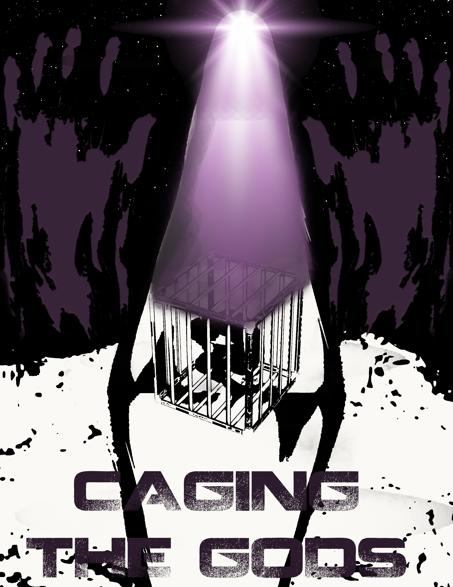
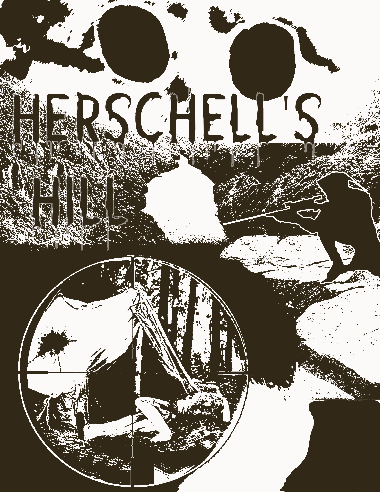
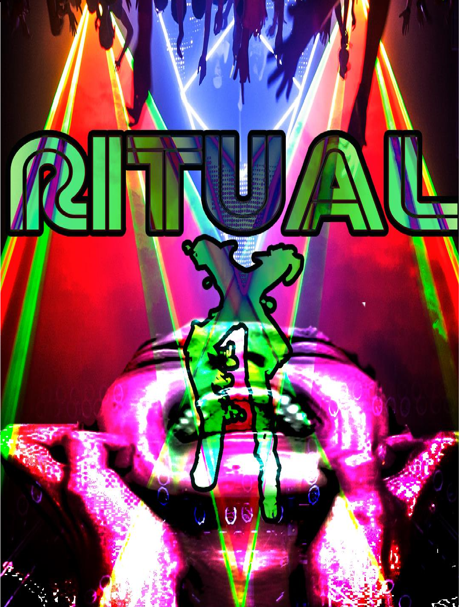
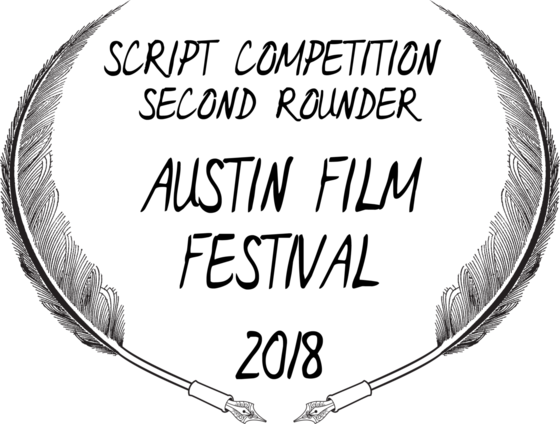

Jon Chamis is a screenwriter from Vermont whose passion for horror was born on the living room floor in the secret hours
of the night as a child. Obsessed by the dark arts of cinema he pursued a bachelor’s in film production at a small
liberal arts college tucked away in the green mountains to hone his passion into a craft. Since his graduation in 2017,
Jon has written five feature length tales of terror which have received accolades amongst the notable festivals and
competitions such as Austin Film Fest, PAGE Awards and Script Pipeline.
In his spare time away from the keyboard Jon Chamis plays guitar in various metal bands and features as a horror film
critic at FarsightedBlog.com, a website dedicated to the exposure of independent art house and horror.

An exploration of the origins of religion through the surreal nightmare of a crash landed alien turned star cult messiah.

A soldier returns home from war to bury her father only to come under fire from a maniac sniper on a family camping trip.
A lovelorn night clerk descends into madness after discovering a neighborhood vampire and courting her evil intentions.
Two brothers embark on a motorcycle trip only to get stranded in a backwoods town terrorised by a local werewolf biker gang.

A podcaster in search of his break through episode accompanies his friends to a spring break music festival only to uncover an occult conspiracy looming behind the curtains.
Caging the Gods
Trapped in a fever dream fusion of Jodorosky's The Mountain and Martyrs, Caging The Gods is a gruesome metaphor that questions the difference between insanity and faith, sadism and mercy. A miracle and a curse.
On the night of Xalo's star, an astrological event awaited by Herbert Welsch and his followers (The Star of Xalo), a suicide ritual consecrates the summoning of an intergalactic being.
Upon the ritual's completion a UFO crash lands near the Jonestown-eque compound and Herbert rushes to find an alien lying near death in the crashed vessel. Herbert is quick to usher the arrived guest into his compound and nursesthe being back to health. Coming to, the alien is informed his name is Xalo and he is the long awaited Messiah who will guide the cult into a new era of civilization, Xalo the Son of the Stars. Unable to communicate or understand what is happening, Xalo is suddenly taken to be worshipped by the followers as proof of Herbert's prophecies. At the mercy of their care Xalo is used as a prop to further validate Herbert's escalating delusions of grandeur. A new era of existence will be ushered in by the immersion of flesh and stars, a child will be born. Drugged and abused, Xalo is forced to copulate with Herbert's daughter Myra who not only seeks to fulfill the prophecy but to beseech her father's power. Despite Xalo's screams, Myra is impregnated only to die in childbirth of her mutant son. Angered by his daughter's death and seeing it as a betrayal by Xalo, Herbert kills the star-borne offspring and declares Xalo not a messiah but 'The Anti-Life.' In fear of their unwitting kickstart to the now impending apocalypse that Herbert preaches, Xalo is then crucified. As Xalo lays bleeding out upon a cross and looking up at the stars, he wonders how it is he got here and pleads for help. Suddenly three Cosmic Elders appear having finally heard his calls. They offer to bring him home, but something has changed in Xalo. What was confused, helpless and lost has now become callous and Xalo no longer seeks escape but revenge.
Hershell's Hill
Herschel’s Hill is a slasher-with-a-gun focused on mature character dynamics and themes that heighten brutal slasher fanfare. In a blend of Jacob’s Ladder and Friday The 13th, Herschell’s Hill follows a group of soldiers under fire from an undead maniac sniper who terrorizes a local hiking trail.
Amanda McKinley is a sergeant in the U.S Army Corp returned from Afghanistan and accompanied by her squadmates Brady (her boyfriend) and Knox (his buddy). To reunite with her sister, Sarah, Amanda agrees to take a hiking trip up to her recently deceased father's cabin to spread his ashes. Problems arise when they lose their bearings and stumble into a haunted area called Herschell’s Hill--a place that locals have avoided since the early 1900’s when a murdered boy named Herschell came back from the dead to kill all the townsfolk. Amanda takes charge to get them back on track and up to the cabin, but it feels off. Besides things being out of place, mysterious notes are discovered in her father's journal, which convinces Sarah that her dad had not killed himself, but was murdered. Amanda dismisses her overly emotional sister’s worries--that is until she gets pinned down by sniper fire. From here, Amanda does her best to lead her troop through the forest and out to safety. However, this is Herschell’s Hill and his aim is true. Amanda’s strength is tested as Herschell picks off her troop one by one and captures her, where she realizes that Herschell’s objective isn’t just to kill but to take the child growing in her womb.
Night Stocker
Nightstocker is The Graduate meets Fright Night with it’s mix of psycho-drama and traditional vampire lore that create a tone poem that explores love, loss, isolation, fatalism, survivors syndrome and the curse of neighborhood vampire.
Andrew is a jobless college dropout who is haunted by the recent loss of his girlfriend Lola, who drowned in a lake in Maine. Andrew finds nothing but misery in his parent’s suburban tract home. Annoyed by his parent’s middle-class prodding to move on with his life, Andrew takes a job as a Nightstocker at a local grocery store where he finds solace in the lonely hours of the night. He spends his free time seeing midnight movies and wandering the neighborhoods. One night, he notices a mysterious red light from a neighbor’s window and returns a few nights later to investigate. Here he meets the seductive, wealthy older woman Elizabeth Speck, who has
Satan's Pride
Staining the roads red and howling under the harvest moon, Satan’s Pride is fuel injected biker exploitation and traditional werewolf lore akin to Easy Rider meets The Howling. Fast, loud and mean this werewolf horror examines the beast within man and gnashes its teeth at the question of carnal innocence.
Mitch is a recently divorced father who mourns the loss of his father with his brother Bryan. Together they’ve embarked on a road trip to free themselves to their twin pipe steers and the open road. But trouble rolls into town when they encounter local menace Ryke and his biker gang Satan’s Pride. Words lead to fists and the brothers soon find themselves pursued by the gang and are harassed into violent confrontation that draws the attention of local law. Sheriff Bordough chases off the local trouble but informs the brothers they shouldn’t stick around here.
They wouldn’t if it weren’t for their bikes being vandalized. A local repair man informs them it will be a few days before they can be fixed and the brothers find themselves stranded. Together they spend the time as best they can, getting drunk at the local bar. But as drunken priests ramble, biker chicks seduce and talk of the impending harvest moon becomes more prevalent Mitch and Bryan sense there is something strange about this place. Sheriff suddenly orders them to spend the night in jail due to the town's fear of visitors and they oblige. But as the full moon shines and the roar of engines coast through the town, they learn they’ve been not visitors but captives for sacrifice to the snarling blood lust of a werewolf biker gang; Satan’s Pride.
Ritual X

A horror destination experience akin to The Blair Witch Project meets Project X with a vibrant concert experience that becomes the hunting grounds of a group of cultists and their A.I figurehead known as The Father. Kenneth Stranger is the host of America Makes Weird, a podcast dedicated to discovering the strangeness of our own realities but lacks a serious viewer count to qualify on any radar. In hopes of finding his break through episode Kenneth accompanies his friends to a Burning Man-esque spring break festival and along the way pick up a hitchhiker named Zarathustra. She tells them something big is awaiting them at the festival and reveals she belongs to a spiritual movement called the Neologians. Immediately captivated by her, Kenneth splits his time between drug induced follies with friends and pursuing Zarathustra for an interview for his show. She agrees to not only interview but introduce Kenneth into the Neologian and meet the one they call Father. As Kenneth records, he is drawn into a much larger occult conspiracy at play as Zarathustra tells him he will be “The Witness” to The Great Upload, a mass-death ritual to be carried out upon the unsuspecting patrons of the spring break music festival. If only Kenneth hadn’t gotten so close, he may be able to save both his friends and possibly the world...